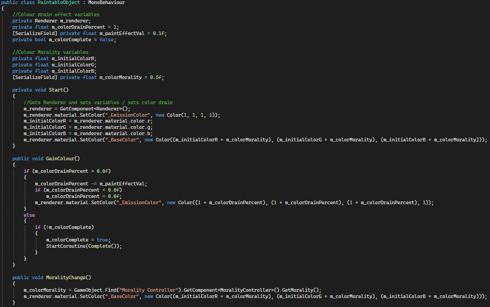

Prototype 2
Open World Narrative Game
Project Type: University
Software/Language Used: Unity / C#
A Open World game prototype that communicates a Narrative through enviromental elements, driven by player choice.
Player Controls
The player had directional movement, jumping and the ability to swap their current tool (between a paint gun and a normal gun). Movement is handled by reading in the directional input and applying it to a movement vector that is then applied during physics updates. Jumping first checks the players y velocity to make sure they are stationary before allowing a jump force to be applied to the movement vector. Swapping tools simple switches a decimal value between 1 and -1, setting which tool visual is active accordingly. If this value is 0 then nothing is displayed, to show they haven't acuired the tools yet.
The code below shows how the player can pick up a tool when an invisible hitbox is touching the pick up object.
Narrator
The player however doesn't start with control, as a Narrator introduces them to the world though a text box at the top of the screen.
The code below shows how the narrator displays different text read in from a file.
Paint Projectiles
To colour in an object, the player has to fire paint at it using their paint gun. First the ammo is checked and if there is ammo left, the projectile is spawned at the fire point. Then the projectile is given a force to propell it forward and towards the center of the screen, before ammo is updated.

The code below shows how the paint projectile interacts with objects in the world.
Paintable Objects
Paintable objects have their colour drained at the start of the game, with this colour returning when hit by paint projectiles. This is handled by a veriable called colourDrainPercent which representes the level of colour the object has been drained of. This veriable is applied to the RGB element of a emission of the materail, so that when its 1, it emits white but when its 0, there is no emission allowing the colour to be seen clearly. The effect that each paint projectile has on an object is controlled through a variable called paintEffectVal, meaning that certain objects can take more paint to complete than others. Once the object is complete, a small animation is played by changing the intensity of the colour.
The code below shows how the colour intensity is changed in the completion animation.
Reloading
To reload the paint gun, the player has to right click on a pond. This is measured using a hit box protruding from the camera that tells the pond when the player is in range.
Creatures
Within the world are creatures that will attack the player if they get near. The creature uses a Nav Mesh to randomly roam a specified area until the player enters their detection range. This detection distance is measured through triginometry and will set the target position for the creature to move to accordingly. Then at a close enough range the creature will damage the player using a collider to measure and trigger the damage.
The code below shows how the creature chooses random potision and moves to them.
Bullets and Morality
To combat this, the player has the option to attack these creatures with their second tool (the normal gun). Using the gun to kill the creatures however negatively affects the players morality which is shown through the brightness of the colour in the world. Event listeners are applied to each paintable object so that when morality shifts, the objects can change their colour brightness accordingly.

The code below shows how the bullet projectile interacts with the world.
Camera Controls
The camera is controlled through mouse movement. The mouse movement is read in and applied to the camera rotation up to a limit above and below. Then the player rotation is set to account for horizontal camrea movement.